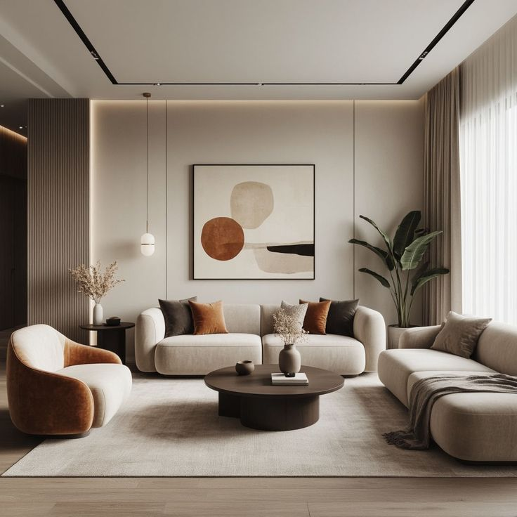
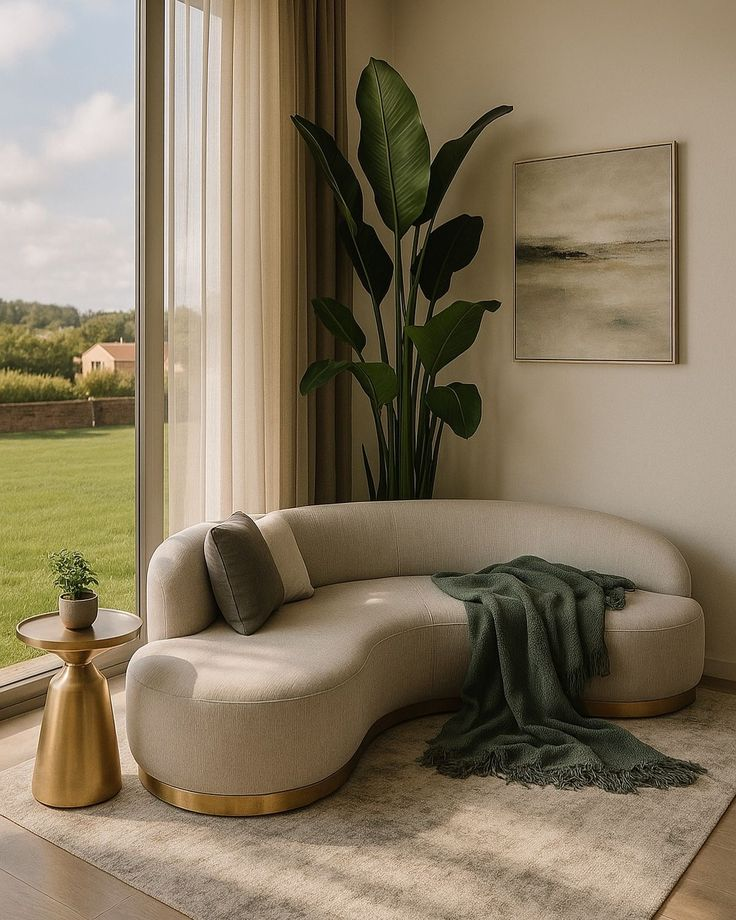

Organic Materials
Sustainably sourced wood and natural fibers for a healthier home.

We believe in the beauty of imperfection. Each piece is handcrafted in our Cairo studio, carrying the soul of the maker and the warmth of the earth.
Shop NowSustainably sourced wood and natural fibers for a healthier home.
Hand-finished by master craftsmen with decades of experience.
Our designers create the perfect fit for your unique space.
Safe and professional shipping right to your doorstep.
Our process is slow and intentional. We source local clay and use traditional techniques that have been passed down through generations, ensuring every vessel tells a unique story.
